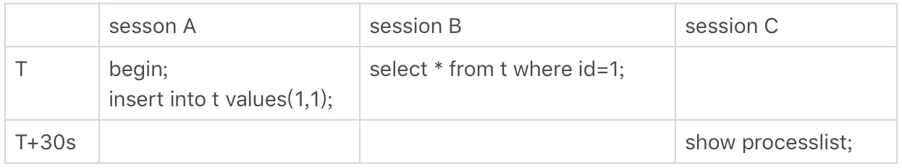
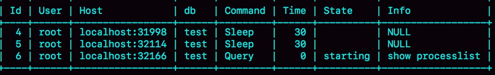
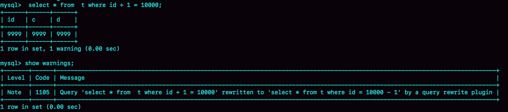

不知道你在实际运维过程中有没有碰到这样的情景：业务高峰期，生产环境的 MySQL 压力太大，没法正常响应，需要短期内、临时性地提升一些性能。 我以前做业务护航的时候，就偶尔会碰上这种场景。用户的开发负责人说，不管你用什么方案，让业务先跑起来再说。 但，如果是无损方案的话，肯定不需要等到这个时候才上场。今天我们就来聊聊这些临时方案，并着重说一说它们可能存在的风险。
短连接风暴
正常的短连接模式就是连接到数据库后，执行很少的 SQL 语句就断开，下次需要的时候再重连。如果使用的是短连接，在业务高峰期的时候，就可能出现连接数突然暴涨的情况。
我在第 1 篇文章《基础架构：一条 SQL 查询语句是如何执行的？》中说过，MySQL 建立连接的过程，成本是很高的。除了正常的网络连接三次握手外，还需要做登录权限判断和获得这个连接的数据读写权限。
在数据库压力比较小的时候，这些额外的成本并不明显。
但是，短连接模型存在一个风险，就是一旦数据库处理得慢一些，连接数就会暴涨。max_connections 参数，用来控制一个 MySQL 实例同时存在的连接数的上限，超过这个值，系统就会拒绝接下来的连接请求，并报错提示“Too many connections”。对于被拒绝连接的请求来说，从业务角度看就是数据库不可用。
在机器负载比较高的时候，处理现有请求的时间变长，每个连接保持的时间也更长。这时，再有新建连接的话，就可能会超过 max_connections 的限制。
碰到这种情况时，一个比较自然的想法，就是调高 max_connections 的值。但这样做是有风险的。因为设计 max_connections 这个参数的目的是想保护 MySQL，如果我们把它改得太大，让更多的连接都可以进来，那么系统的负载可能会进一步加大，大量的资源耗费在权限验证等逻辑上，结果可能是适得其反，已经连接的线程拿不到 CPU 资源去执行业务的 SQL 请求。
那么这种情况下，你还有没有别的建议呢？我这里还有两种方法，但要注意，这些方法都是有损的。
### 第一种方法：先处理掉那些占着连接但是不工作的线程
max_connections 的计算，不是看谁在 running，是只要连着就占用一个计数位置。对于那些不需要保持的连接，我们可以通过 kill connection 主动踢掉。这个行为跟事先设置 wait_timeout 的效果是一样的。设置 wait_timeout 参数表示的是，一个线程空闲 wait_timeout 这么多秒之后，就会被 MySQL 直接断开连接。
但是需要注意，在 show processlist 的结果里，踢掉显示为 sleep 的线程，可能是有损的。我们来看下面这个例子。

在上面这个例子里，如果断开 session A 的连接，因为这时候 session A 还没有提交，所以 MySQL 只能按照回滚事务来处理；而断开 session B 的连接，就没什么大影响。所以，如果按照优先级来说，你应该优先断开像 session B 这样的事务外空闲的连接。 但是，怎么判断哪些是事务外空闲的呢？session C 在 T 时刻之后的 30 秒执行 show processlist，看到的结果是这样的。

图中 id=4 和 id=5 的两个会话都是 Sleep 状态。而要看事务具体状态的话，你可以查 information_schema 库的 innodb_trx 表。

这个结果里，trx_mysql_thread_id=4，表示 id=4 的线程还处在事务中。
因此，如果是连接数过多，你可以优先断开事务外空闲太久的连接；如果这样还不够，再考虑断开事务内空闲太久的连接。
从服务端断开连接使用的是 kill connection + id 的命令， 一个客户端处于 sleep 状态时，它的连接被服务端主动断开后，这个客户端并不会马上知道。直到客户端在发起下一个请求的时候，才会收到这样的报错“ERROR 2013 (HY000): Lost connection to MySQL server during query”。
从数据库端主动断开连接可能是有损的，尤其是有的应用端收到这个错误后，不重新连接，而是直接用这个已经不能用的句柄重试查询。这会导致从应用端看上去，“MySQL 一直没恢复”。
你可能觉得这是一个冷笑话，但实际上我碰到过不下 10 次。
所以，如果你是一个支持业务的 DBA，不要假设所有的应用代码都会被正确地处理。即使只是一个断开连接的操作，也要确保通知到业务开发团队。
### 第二种方法：减少连接过程的消耗
有的业务代码会在短时间内先大量申请数据库连接做备用，如果现在数据库确认是被连接行为打挂了，那么一种可能的做法，是让数据库跳过权限验证阶段。 跳过权限验证的方法是：重启数据库，并使用–skip-grant-tables 参数启动。这样，整个 MySQL 会跳过所有的权限验证阶段，包括连接过程和语句执行过程在内。 但是，这种方法特别符合我们标题里说的“饮鸩止渴”，风险极高，是我特别不建议使用的方案。尤其你的库外网可访问的话，就更不能这么做了。 在 MySQL 8.0 版本里，如果你启用–skip-grant-tables 参数，MySQL 会默认把 –skip-networking 参数打开，表示这时候数据库只能被本地的客户端连接。可见，MySQL 官方对 skip-grant-tables 这个参数的安全问题也很重视。 除了短连接数暴增可能会带来性能问题外，实际上，我们在线上碰到更多的是查询或者更新语句导致的性能问题。其中，查询问题比较典型的有两类，一类是由新出现的慢查询导致的，一类是由 QPS（每秒查询数）突增导致的。而关于更新语句导致的性能问题，我会在下一篇文章和你展开说明。
慢查询性能问题
在 MySQL 中，会引发性能问题的慢查询，大体有以下三种可能：
- 索引没有设计好；
- SQL 语句没写好；
- MySQL 选错了索引。 接下来，我们就具体分析一下这三种可能，以及对应的解决方案。
### 导致慢查询的第一种可能是，索引没有设计好
这种场景一般就是通过紧急创建索引来解决。MySQL 5.6 版本以后，创建索引都支持 Online DDL 了，对于那种高峰期数据库已经被这个语句打挂了的情况，最高效的做法就是直接执行 alter table 语句。 比较理想的是能够在备库先执行。假设你现在的服务是一主一备，主库 A、备库 B，这个方案的大致流程是这样的：
- 在备库 B 上执行 set sql_log_bin=off，也就是不写 binlog，然后执行 alter table 语句加上索引；
- 执行主备切换；
- 这时候主库是 B，备库是 A。在 A 上执行 set sql_log_bin=off，然后执行 alter table 语句加上索引。 这是一个“古老”的 DDL 方案。平时在做变更的时候，你应该考虑类似 gh-ost 这样的方案，更加稳妥。但是在需要紧急处理时，上面这个方案的效率是最高的。
### 导致慢查询的第二种可能是，语句没写好
比如，我们犯了在第 18 篇文章《为什么这些 SQL 语句逻辑相同，性能却差异巨大？》中提到的那些错误，导致语句没有使用上索引。 这时，我们可以通过改写 SQL 语句来处理。MySQL 5.7 提供了 query_rewrite 功能，可以把输入的一种语句改写成另外一种模式。 比如，语句被错误地写成了 select * from t where id + 1 = 10000，你可以通过下面的方式，增加一个语句改写规则。
mysql> insert into query_rewrite.rewrite_rules(pattern, replacement, pattern_database) values ("select * from t where id + 1 = ?", "select * from t where id = ? - 1", "db1");
call query_rewrite.flush_rewrite_rules();
这里，call query_rewrite.flush_rewrite_rules() 这个存储过程，是让插入的新规则生效，也就是我们说的“查询重写”。你可以用图 4 中的方法来确认改写规则是否生效。

### 导致慢查询的第三种可能，就是碰上了我们在第 10 篇文章《MySQL 为什么有时候会选错索引？》中提到的情况，MySQL 选错了索引
这时候，应急方案就是给这个语句加上 force index。 同样地，使用查询重写功能，给原来的语句加上 force index，也可以解决这个问题。 上面我和你讨论的由慢查询导致性能问题的三种可能情况，实际上出现最多的是前两种，即：索引没设计好和语句没写好。而这两种情况，恰恰是完全可以避免的。比如，通过下面这个过程，我们就可以预先发现问题。
- 上线前，在测试环境，把慢查询日志（slow log）打开，并且把 long_query_time 设置成 0，确保每个语句都会被记录入慢查询日志；
- 在测试表里插入模拟线上的数据，做一遍回归测试；
- 观察慢查询日志里每类语句的输出，特别留意 Rows_examined 字段是否与预期一致。（我们在前面文章中已经多次用到过 Rows_examined 方法了，相信你已经动手尝试过了。如果还有不明白的，欢迎给我留言，我们一起讨论）。
不要吝啬这段花在上线前的“额外”时间，因为这会帮你省下很多故障复盘的时间。 如果新增的 SQL 语句不多，手动跑一下就可以。而如果是新项目的话，或者是修改了原有项目的 表结构设计，全量回归测试都是必要的。这时候，你需要工具帮你检查所有的 SQL 语句的返回结果。比如，你可以使用开源工具 pt-query-digest(https://www.percona.com/doc/percona-toolkit/3.0/pt-query-digest.html)。
QPS 突增问题
有时候由于业务突然出现高峰，或者应用程序 bug，导致某个语句的 QPS 突然暴涨，也可能导致 MySQL 压力过大，影响服务。 我之前碰到过一类情况，是由一个新功能的 bug 导致的。当然，最理想的情况是让业务把这个功能下掉，服务自然就会恢复。 而下掉一个功能，如果从数据库端处理的话，对应于不同的背景，有不同的方法可用。我这里再和你展开说明一下。 一种是由全新业务的 bug 导致的。假设你的 DB 运维是比较规范的，也就是说白名单是一个个加的。这种情况下，如果你能够确定业务方会下掉这个功能，只是时间上没那么快，那么就可以从数据库端直接把白名单去掉。 如果这个新功能使用的是单独的数据库用户，可以用管理员账号把这个用户删掉，然后断开现有连接。这样，这个新功能的连接不成功，由它引发的 QPS 就会变成 0。 如果这个新增的功能跟主体功能是部署在一起的，那么我们只能通过处理语句来限制。这时，我们可以使用上面提到的查询重写功能，把压力最大的 SQL 语句直接重写成”select 1”返回。 当然，这个操作的风险很高，需要你特别细致。它可能存在两个副作用：
- 如果别的功能里面也用到了这个 SQL 语句模板，会有误伤；
- 很多业务并不是靠这一个语句就能完成逻辑的，所以如果单独把这一个语句以 select 1 的结果返回的话，可能会导致后面的业务逻辑一起失败。
所以，方案 3 是用于止血的，跟前面提到的去掉权限验证一样，应该是你所有选项里优先级最低的一个方案。 同时你会发现，其实方案 1 和 2 都要依赖于规范的运维体系：虚拟化、白名单机制、业务账号分离。由此可见，更多的准备，往往意味着更稳定的系统。
小结
今天这篇文章，我以业务高峰期的性能问题为背景，和你介绍了一些紧急处理的手段。 这些处理手段中，既包括了粗暴地拒绝连接和断开连接，也有通过重写语句来绕过一些坑的方法；既有临时的高危方案，也有未雨绸缪的、相对安全的预案。 在实际开发中，我们也要尽量避免一些低效的方法，比如避免大量地使用短连接。同时，如果你做业务开发的话，要知道，连接异常断开是常有的事，你的代码里要有正确地重连并重试的机制。 DBA 虽然可以通过语句重写来暂时处理问题，但是这本身是一个风险高的操作，做好 SQL 审计可以减少需要这类操作的机会。 其实，你可以看得出来，在这篇文章中我提到的解决方法主要集中在 server 层。在下一篇文章中，我会继续和你讨论一些跟 InnoDB 有关的处理方法。 最后，又到了我们的思考题时间了。 今天，我留给你的课后问题是，你是否碰到过，在业务高峰期需要临时救火的场景？你又是怎么处理的呢？